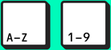
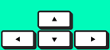
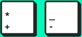

Find a spot you want to paint
Move through Google StreetView using the keyboard
city 
walk 
zoom 
camera↑↓
Action? Grab the can and press
Finished? To take a picture press
See your picture on spraycan.de
Thank you for leaving something out in the streets